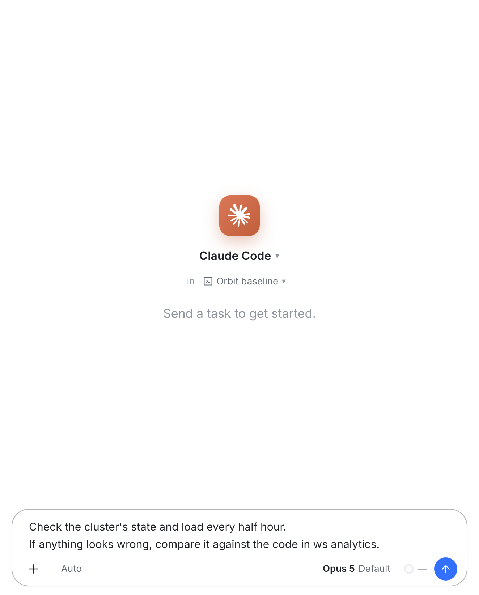
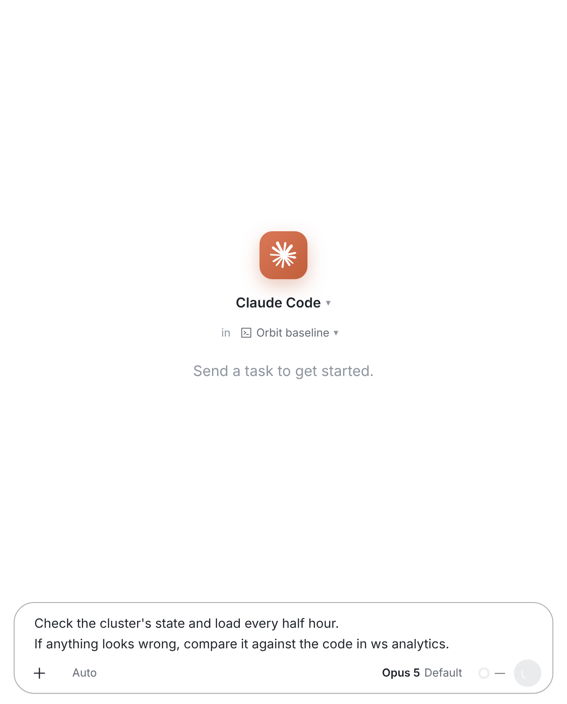
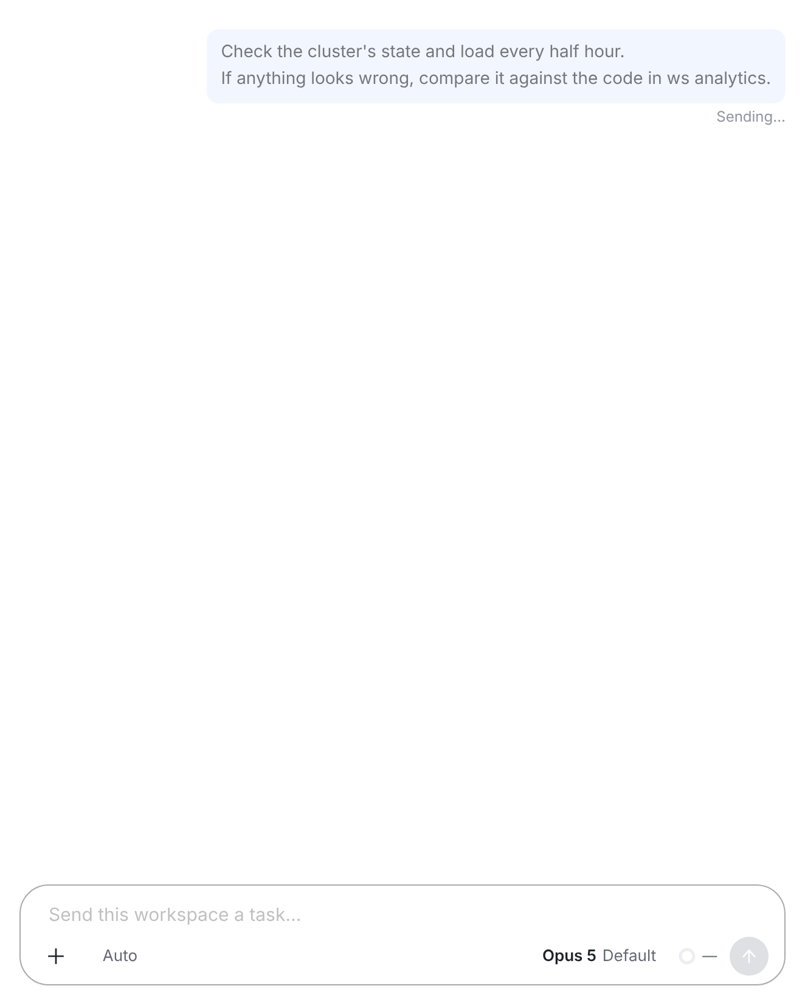
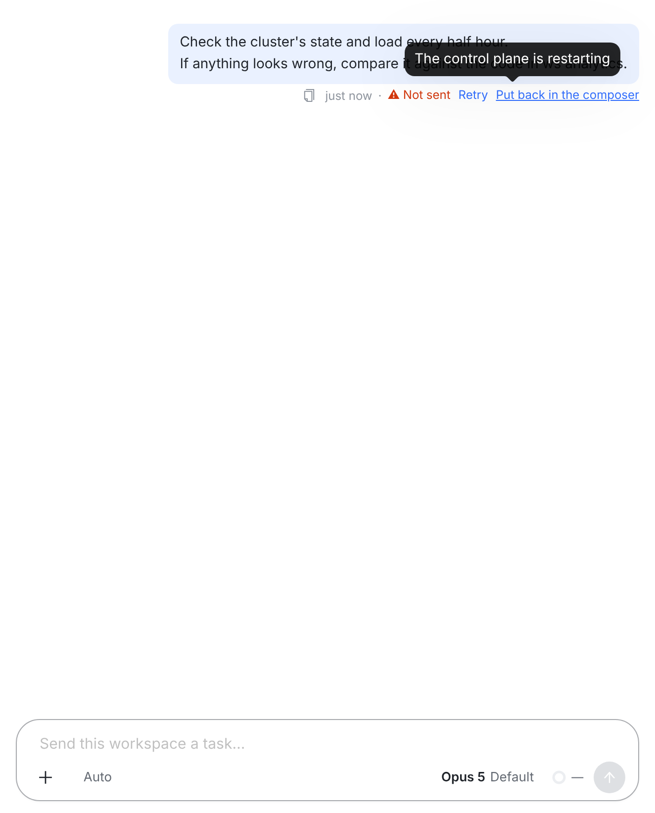

The same bubble as in a conversation that exists, on the new-session page: in the engine picker's place,
at the top, where the conversation it opens will start. Its Retry is safe because the request carries its own key
(clientRequestId, migration 1730): a create whose answer was lost and is sent again answers with the session it
already made.

The new-session page: the engine picker, and the first message typed.

The build before the change: the words stay in the box behind a spinner until the session exists.

The words leave the box at once. The bubble is dimmed, with Sending… in its foot, and Send is a
plain disabled arrow. When the session is made, its page opens with this message as its first.

⚠ Not sent · Retry · Put back in the composer, with the reason in the tooltip. Retry sends the same
key. Send stays off until this one is retried or put back, so a second first message can't replace it.